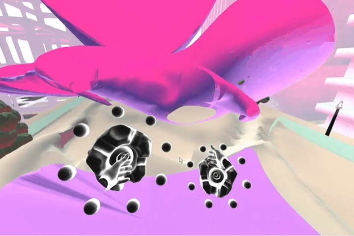
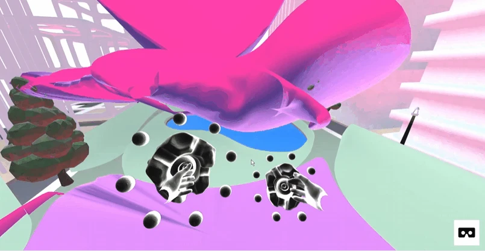
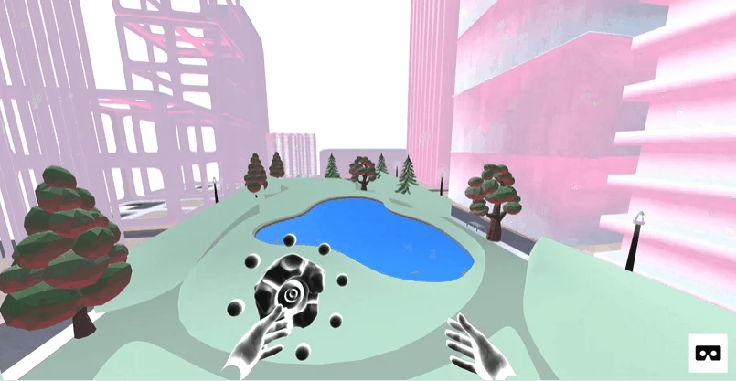

WormHole / Three Exhibit
An exhibition you move through, inside the browser.
WormHole was presented in the DigitalFUTURES WebVR Exhibition in 2019. This interactive virtual exhibition, documented here through the Three Exhibit web project, was built with Three.js. The project brings spatial design into a navigable web environment, combining a gallery, particles, and animated forms.
Spatial design · Interactive development
Three.js · JavaScript · Unity · Rhino3D
Exhibited · DigitalFUTURES WebVR Exhibition, 2019

Space as an interface
First-person navigation invites visitors to explore instead of following a fixed sequence of pages. Objects, color, and spatial relationships become part of the way the exhibition is experienced.


An environment in motion
Particles and animated elements give the gallery a changing atmosphere. These views come from the original project GIFs in the repository.


Project archive
The original hosted demo is no longer available after the discontinuation of Glitch hosting. The source and recorded demonstration preserve the project. Watch the recorded demo ↗